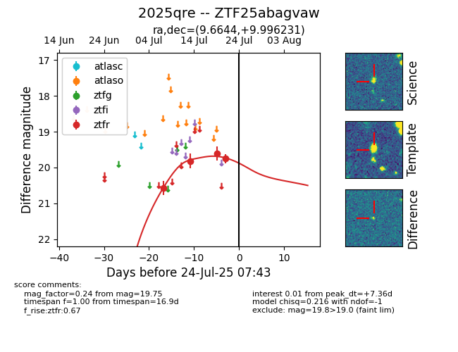

Target ZTF25abagvaw at 2025-07-24 07:43, see:
FINK: fink-portal.org/ZTF25abagvaw
Lasair: lasair-ztf.lsst.ac.uk/objects/ZTF25abagvaw
ALeRCE: alerce.online/object/ZTF25abagvaw
TNS: wis-tns.org/object/2025qre
YSE: ziggy.ucolick.org/yse/transient_detail/2025qre
alt names
ZTF25abagvaw (ztf,fink)
2025qre (tns,yse)
coordinates:
equatorial (ra, dec) = (9.6644,+9.99623)
galactic (l, b) = (117.7295,-52.74637)
photometry
last ztfr=19.75
4 ztfr detections
